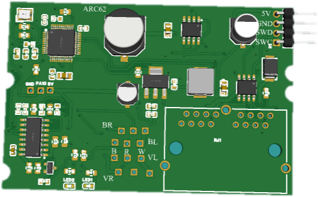
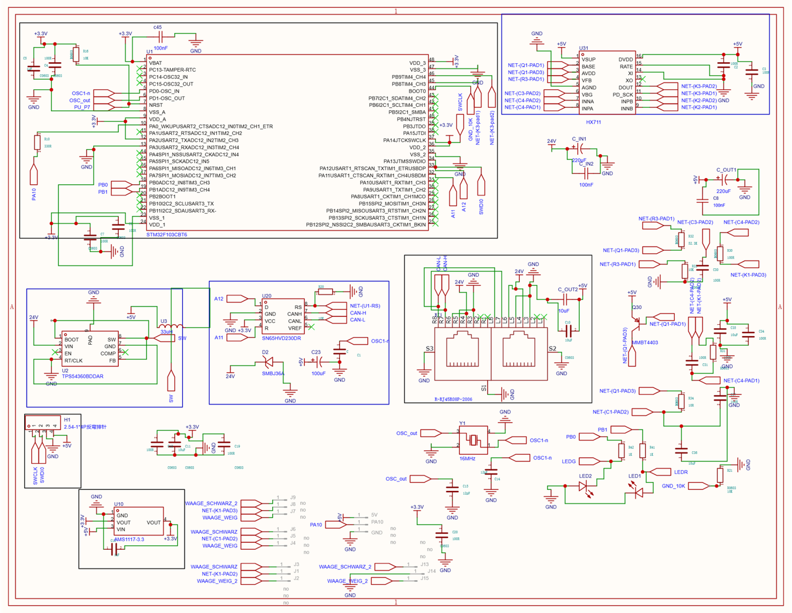
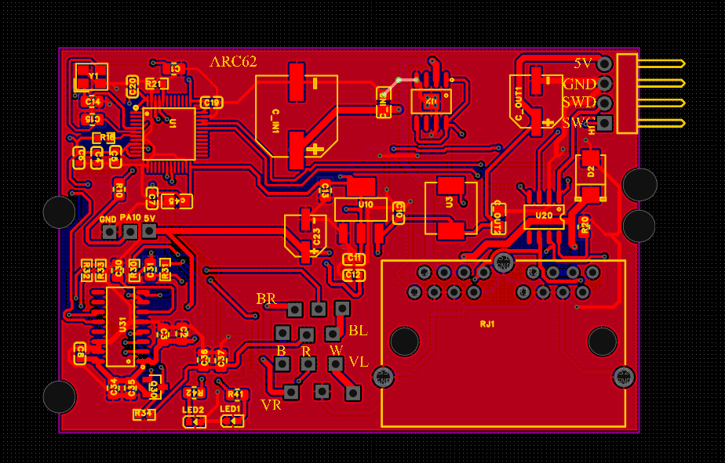
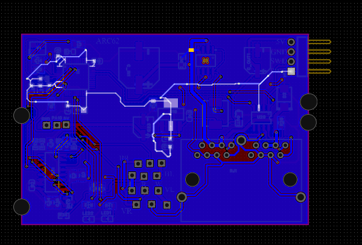
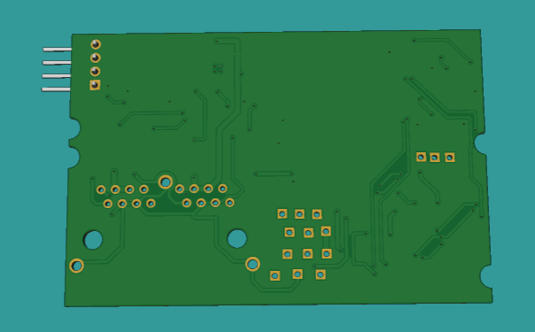
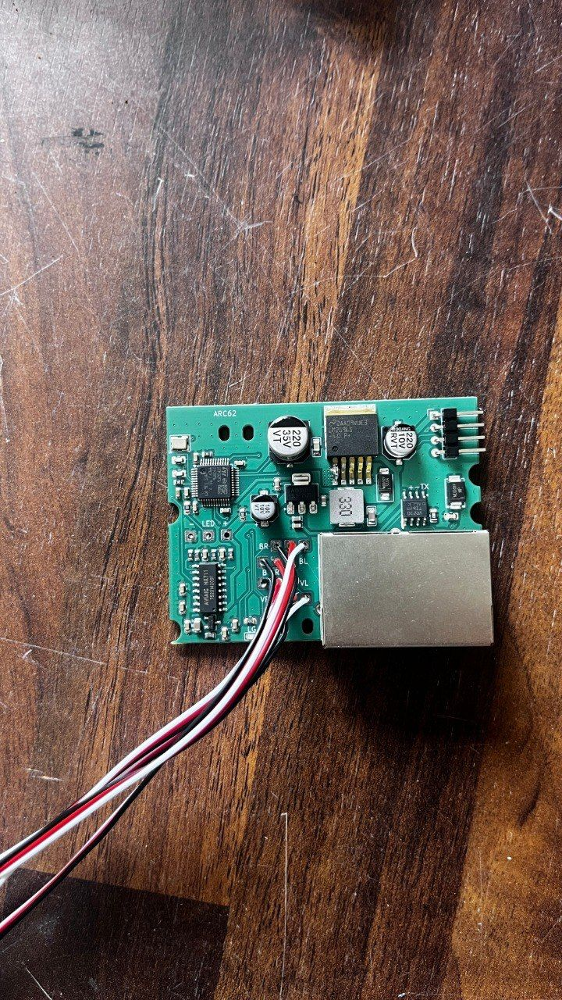
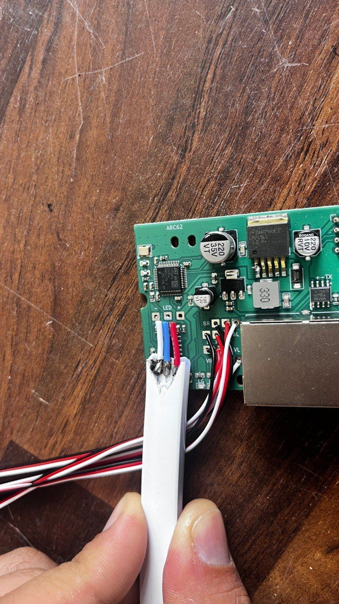
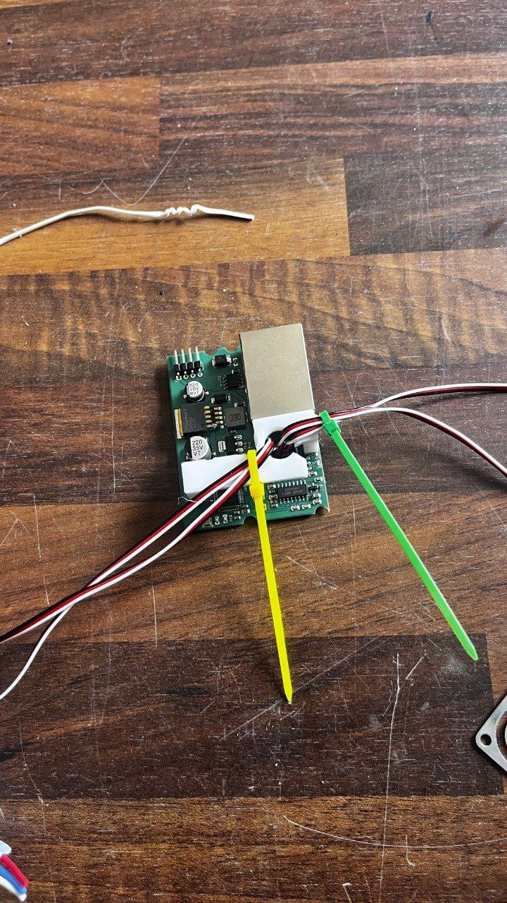
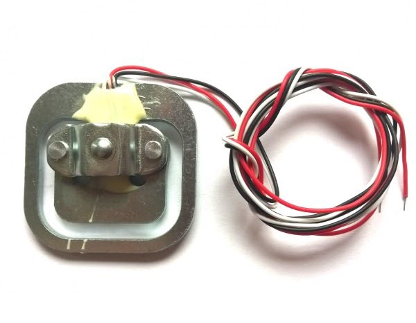

Home / Work / Load Cell Controller
Load Cell Daisy-Chain Controller — Diagnostics & Repair

- Board
- ARC62
- Tool
- KiCad 10
- Starting point
- PCB + BOM, no schematic
- MCU
- STM32F103CBT6
- Buck regulator
- TPS54360BDDAR
- CAN transceiver
- SN65HVD230DR
- Load cell ADC
- HX711
- Field scale
- 30+ units
- Turnaround
- 2 days + 1 post-fab revision
01The challenge
A client came through Fiverr with a board already in the field: ARC62, an STM32-based controller that reads a load cell through an HX711, drives two status LEDs, and links up to 30+ sibling units over a CAN daisy-chain through dual RJ45 connectors. It worked, but not reliably enough for their customer's deployment.
They had the KiCad PCB layout and a BOM, but no schematic, plus their own test notes on four symptoms: high power draw, startup inrush, unstable load cell readings and uneven LED brightness.
02My role
- Rebuilt the schematic from the bare PCB and BOM
- Diagnosed each of the four reported symptoms
- Specified component and layout changes
- Produced a corrected KiCad revision, a diagnostic write-up and a repair guide
The client's project lived in KiCad, so the work stayed in KiCad 10 and every deliverable drops straight back into their existing project.
03Engineering approach
Reverse engineering first
- Cross-referenced every reference designator against the BOM to identify actual part numbers
- Pulled datasheets for the STM32F103CBT6, TPS54360BDDAR, SN65HVD230DR, HX711, AMS1117-3.3 and MMBT4403 to confirm pinouts
- Traced the copper net by net using ratsnest and net highlighting
- Rebuilt the full schematic, which became the basis for each diagnosis
1. High power draw and a hot STM32
The clamp diode D2 sits across the buck converter's switch node. Its breakdown voltage was close to the normal switching excursion, so it appeared to conduct on every cycle, adding input current and heating the regulator and the STM32 next to it. This matches the client's observation that removing D2 stopped the overheating. D1 sits on a lightly loaded protection branch, which explains why reversing it changed nothing.
Changes: re-specified D2 with a clamp voltage clear of the switching range, and checked the 33 µH inductor's saturation current against the real peak current.
2. Startup inrush across the daisy-chain
With 30+ boards on one 24 V bus powering up together, the combined bulk-capacitor charging current tripped the supply. That is a multi-node problem, not a fault on a single board.
Changes: an RC soft-start delay on the TPS54360 EN pin on each board, and a recommendation for an inrush-limiting stage (NTC or MOSFET) at the head of the chain.
3. Load cell signal instability
The load cell leads land on bare header pins with no strain relief, next to the HX711 inputs and near the buck switching node and LED driver lines. Flexing the wires changes their coupling to those noisy nets, which shows up as drift on a microvolt-level bridge signal. The 3D-printed guide compensated for this by holding the wires still.
Changes: a locking, strain-relieved connector footprint, a guard trace and tighter ground stitching around the HX711 inputs, more separation from the switching lines, and small filter caps across the bridge inputs.
4. LED brightness variance
Both status LEDs are driven open-loop from a GPIO through a series resistor, so brightness follows LED forward-voltage tolerance, resistor tolerance and any cold solder joint resistance. Across 30+ hand-assembled boards that variation becomes visible.
Changes: a solder rework and continuity check on the LED connector pads, 1% current-set resistors, and a proposed constant-current driver stage as the durable fix.
04PCB design








05Verification
The rebuilt schematic was cross-checked against every reference designator on the board, the BOM part numbers and each IC's datasheet pinout. D1's function was confirmed on that schematic before it was flagged as correctly placed. One post-manufacture revision was included in the engagement for anything that surfaced on the physical retest.
06Final output
- Diagnostic write-up explaining the root cause and fix for all four issues
- Step-by-step repair guide for the fixes the client could apply themselves
- Corrected KiCad revision that modifies the existing board, with editable source files
- Delivered inside the agreed 2-day window
07Project result
The client received a documented root cause and proposed fix for each symptom, a rebuilt schematic for a board that had none, and an editable corrected KiCad revision.